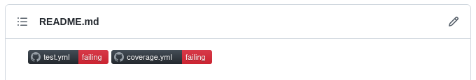

Milestone 3
Due: Tuesday, October 4th, 11:59 PM
You will now further configure your group repository
Git Conventions
We expect all work from this point onward do be done on feature branches and merged into master or main via Pull Requests.
Try to work with different branches and "approve" each others pull requests by reviewing their code and then merge into your default project branch.
You must work with your project Git repository. The teaching staff will frequently check the history of your project.
Steps to complete
- Within your project repository, you must set up two workflows with GitHub Actions. One workflow will be used for tests and the other for code coverage. You will need two
.ymlfiles in the.github/workflowsdirectory in your project repository. The.ymldo not need to have meaningful declarations at this point but you should have at least thename:option and theon:option defined. See this link for more details. Make sure theREADME.mdfile at the root of your repo includes badges indicating whether your CI workflows are passing or failing. Your workflows are expected to be failing at this point. You should end up with a renderedREADME.mdfile that looks like this (workflows may fail or have no status):  - In the root of your project repo, you should create a directory called
docs. You can use this directory to organize documentation and tutorials for your final package. You will begin creating this documentation as part of the next milestone.
Grading breakdown
Points Task 5 Configuring test action 5 Configuring coverage action 4 Creating project structure 14 Total